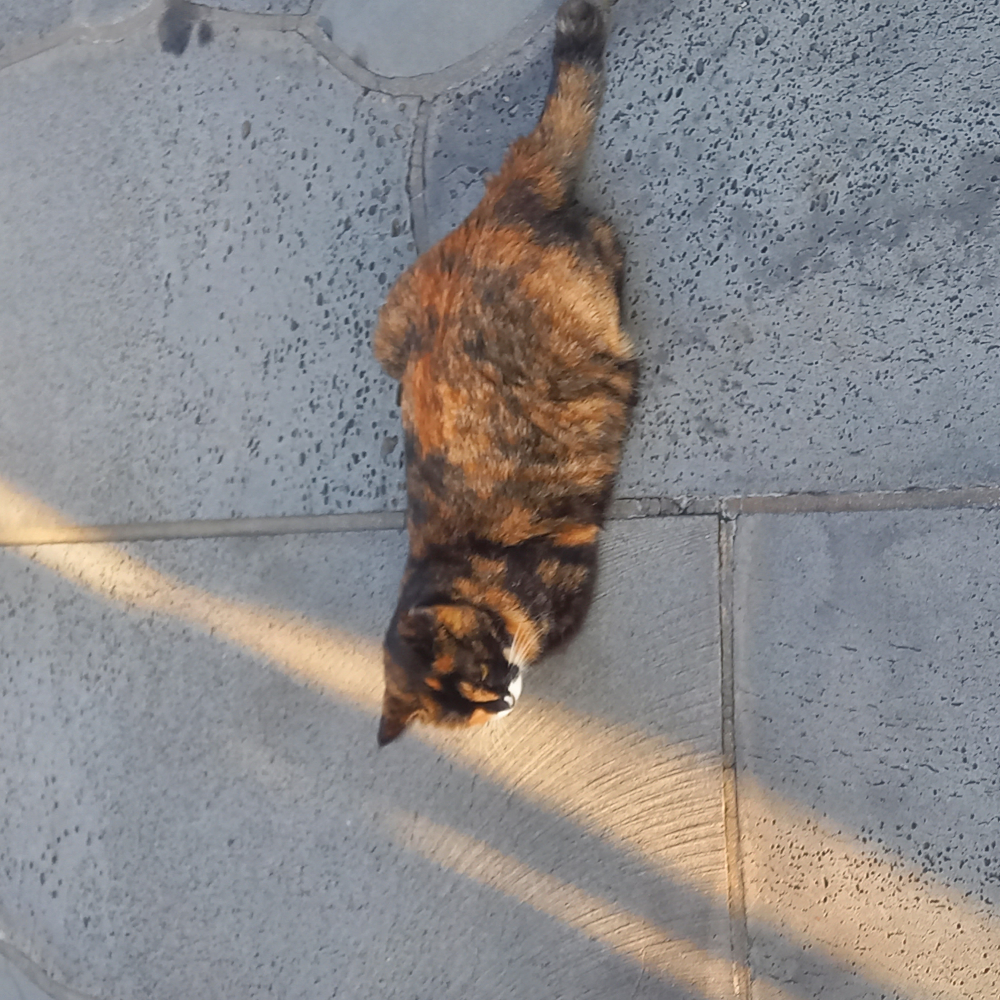
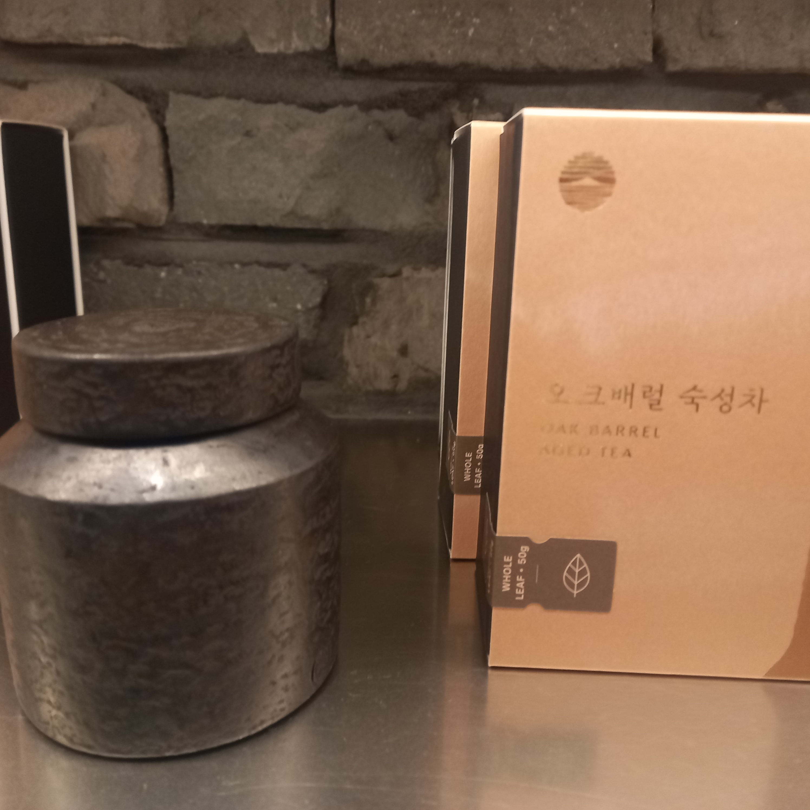
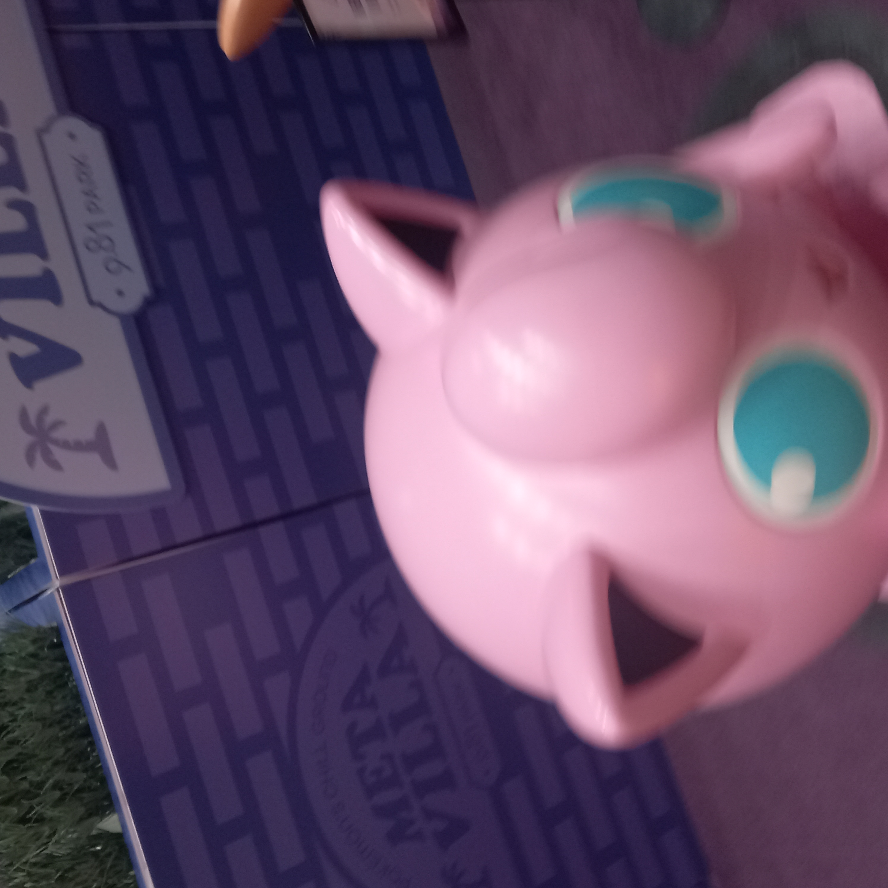

25년도 제주도 수학여행 기록
3박 4일이었는데 기억나는 것 위주로 씀
헬로키티 아일랜드
별 거 없었던걸로 기억함... 그냥 키티네 가족 소개하고 다른 산리오 애들 집 구경이 끝
구경하다가 2층?에 산리오 가챠 있길래 언니가 좋아하는 한교동 피규어 뽑아줄려다가 4만원인가
날림
그리고 3층인가? 산리오 카페 있는데 거기서 젤라또 사먹고 1층 굿즈샵 내려가서 교동이 굿즈 하나 삼.

하리보 해피월드
안쪽에 들어가면 앱 통해서 할 수있는 게임들이 있는데 9개였나 깨면 실제 하리보 코인을 받을 수 있었음.
코인은 젤리로 교환할 수 있었는데 나는 그냥 기념품으로 집에 가지고 옴.
2층으로 올라가면 하리보 굿즈샵 있는데 거기서 하리보 뚜껑달린 머그컵 사고 그 옆에 또 카페 있어서 남은 시간 동안 거기서 친구들이랑 쉬었음.
사진은 하리보 해피월드 건물 앞에 있던 고양이 (귀엽다)

오설록
유명해서 그런지 역시나 사람이 많았다. 나는 그냥 거기서 녹차 하나 사고 나옴
그리고 친구 따라서 차 시음할 수 있는 공간 감. 근데 거기서 초콜릿 맛이 나는 차 발견...
이름은
오크배럴 숙성차고 가격은 17,000원 했었던 걸로 기억함. 신기하긴 했는데 안 삼.

9.81 파크
여기선 그냥 친구들이랑 레이싱하고 1층에서 양궁이랑 승마, 축구하고...
2층에서 총게임 하고 포켓몬 장식 좀 보다가 밥 먹으러 감
